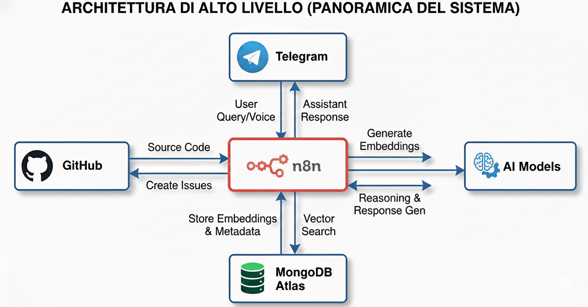
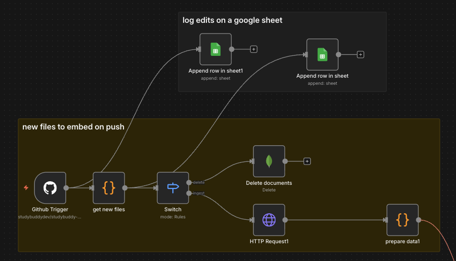
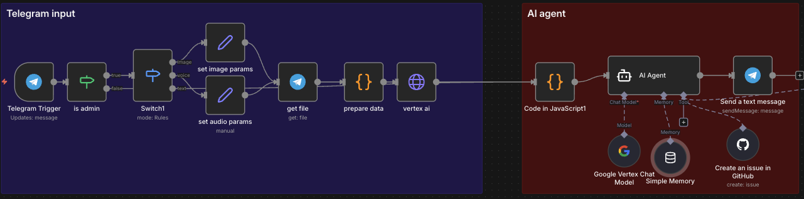

1. Panoramica del Sistema
Questa automazione n8n è composta da tre flussi principali:
- Indicizzazione iniziale: Scarica tutto il codebase e lo carica in un vector store
- Sync automatico: Ogni push su GitHub aggiorna automaticamente i file modificati
- AI Assistant: Un bot Telegram che usa il codebase per creare GitHub issues e rispondere a domande

Stack tecnologico:
- n8n per l'orchestrazione
- MongoDB Atlas come vector store
- Google Vertex AI (Gemini 2.5 Pro) come LLM
- Telegram come interfaccia utente
2. Indicizzazione della Codebase
Il Flusso di Base
Il primo step è scaricare tutti i file .dart dal repository GitHub e prepararli per l'embedding.
Nodi principali:
HTTP Request→ Scarica l'albero dei file dal GitHub APIget file list→ Trasforma l'albero in una lista di fileFilter .dart Files→ Filtra solo i file DartDownload Raw Content→ Scarica il contenuto grezzo di ogni file
Puoi ottenere l'elenco completo dei file usando l'endpoint tree della GitHub API: sostituisci "owner/tuo-repo" con il tuo repository e "SHA_DEL_COMMIT" con lo sha del commit che vuoi esplorare.
https://api.github.com/repos/OWNER/TUA-REPO/git/trees/SHA_DEL_COMMIT?recursive=1Sostituendo OWNER/TUA-REPO e lo SHA ottieni tutti i file presenti in quel commit.

Il Chunking Intelligente
Qui entra in gioco la parte interessante. Non possiamo mettere interi file nel vector store - sono troppo grandi. Dobbiamo fare "chunking", ma in modo intelligente.
// Il codice cerca separatori semantici nel codice Dart
const separators = [
/\nclass /,
/\nimport /,
/\nvoid /,
/\nFutureInvece di tagliare il codice a caso ogni X caratteri, il nodo chunker cerca di dividere su confini semantici - quando inizia una nuova classe, un import, una funzione, etc. Questo mantiene il contesto intatto.
Massima lunghezza chunk: 1200 caratteri
Formato dei Dati
Ogni chunk viene strutturato così:
{
file: "path/to/file.dart",
chunkIndex: 0,
content: "class MyWidget extends StatelessWidget..."
}E poi trasformato :
{
pageContent: "class MyWidget...",
metadata: {
filename: "path/to/file.dart",
chunkIndex: 0
}
}Embeddings e Storage
- Gli embeddings vengono generati e salvati in MongoDB Atlas con indice vettoriale
- Ogni chunk è ricercabile semanticamente

3. Aggiornamenti Automatici su Push
Il Problema
Indicizzare tutto il codebase va bene la prima volta, ma cosa succede quando fai un commit? Non voglio ri-indicizzare tutto ogni volta.
La Soluzione: Incremental Updates
Il nodo Github Trigger ascolta gli eventi di push e il nodo get new files processa i commit per capire cosa è cambiato:
const filesToIngest = new Set(); // File nuovi o modificati
const filesToDelete = new Set(); // File rimossi o modificati
for (const commit of commits) {
commit.added.forEach(path => filesToIngest.add(path));
commit.modified.forEach(path => {
filesToIngest.add(path); // Ri-indicizza versione nuova
filesToDelete.add(path); // Rimuovi versione vecchia
});
commit.removed.forEach(path => filesToDelete.add(path));
}
Due Branch Separati
Il nodo Switch divide il flusso:
- Branch "delete": Rimuove i vecchi documenti da MongoDB
- Branch "ingest": Scarica e indicizza i nuovi file
Esempio di operazione delete:
{
"operation": "delete",
"collection": "codebase",
"query": "{ \"filename\": \"lib/screens/home.dart\" }"
}Logging su Google Sheets
Ogni modifica viene loggata su un Google Sheet con:
- Path del file
- Operazione (delete/ingest)
- Timestamp
- Commit ID
- Author
Questo permette di avere uno storico completo delle modifiche al vector store.
4. AI Agent con Telegram
L'Interfaccia Utente
Ho scelto Telegram come interfaccia perché:
- È veloce
- Supporta voice messages
- È sempre a portata di mano sul telefono
- Ha una buona API
Il Flusso Telegram
Telegram Trigger→ Riceve i messaggiis admin→ Verifica che sia io o un utente autorizzatoSwitch1→ Distingue tra testo, foto e audioCode in JavaScript1→ Estrae il testo dal messaggioAI Agent→ Processa la richiesta

Supporto Multimodale
Voice Messages:
- Scaricati via Telegram API
- Trascritti con gemini con le api di vertex AI
- Processati come testo normale
Immagini:
- Analizzate sempre con Gemini
- L'idea è analizzarle per screenshot di UI/bug
L'AI Agent
Il cuore del sistema è il nodo AI Agent configurato con:
LLM: Google Vertex AI - Gemini 2.5 Pro
uso google perchè ho crediti omaggio da vertex
Tools disponibili:
MongoDB Atlas Vector Store→ Cerca nel codebaseCreate an issue in GitHub→ Crea issue automaticamente
Memory: Buffer window memory
- Mantiene la conversazione contestuale
- Una session per ogni chat Telegram
Il System Prompt
Il prompt è lungo e dettagliato, ma i punti chiave sono:
Core Capabilities:
- GitHub Issue Creation - Convert user messages into structured issues
- Coding Assistant - Provide development guidance using codebase knowledge
- File Recommendations - Suggest specific files to edit
Reasoning Budget
Una cosa interessante nel prompt è il "reasoning budget":
Maximum 2-3 reasoning steps per response
NO loops or iterations - Decide → Draft → DoneQuesto forza l'agent a essere efficiente e non sprecare token in ragionamenti inutili.
5. Come Funziona il RAG
Retrieval-Augmented Generation
RAG = Recuperare informazioni rilevanti prima di generare una risposta.
Il processo:
- User query → "non funziona il bottone per selezionare l'esame nel timer?"
- Embedding della query → Converte la domanda in un vettore numerico
- Similarity search → Cerca i chunk più simili nel vector store
Query vector: [0.23, -0.45, 0.12, ...]
Top results:
- pages/timer/button.dart (similarity: 0.89)
- pages/timer/exam_selector.dart (similarity: 0.82)
- src/interceptors/authInterceptor.ts (similarity: 0.78)- Context injection → I chunk rilevanti vengono passati all'LLM
- Response generation → L'LLM genera la risposta usando il contesto
Perché Funziona
- Semantic search: Non cerca parole chiave, ma significato
- Contesto preciso: Solo le parti rilevanti del codice
- Sempre aggiornato: Il vector store si sincronizza con ogni push
6. Risultati Pratici
Cosa Posso Fare Ora
1. Creare issue velocemente
Telegram: "voglio aggiungere dark mode alla settings page, assegnalo a copilot"
Bot: [Draft completo della issue con file da modificare]
Io: "yes"
Bot: ✅ Issue #123 creata2. Fare domande sul codice
Telegram: "dove viene gestito lo stato dell'utente?"
Bot: "Lo stato utente è gestito in src/state/userState.dart usando Bloc.
Viene inizializzato in src/app.dart al lancio dell'app..."3. Debug assistito
Telegram: "ho un errore nel parsing delle API, dove dovrei guardare?"
Bot: "Controlla src/services/apiService.dart, linee 45-60.
Il parsing JSON potrebbe fallire se manca un campo..."Metriche
- Tempo per creare una issue: Da 5-10 minuti → 30 secondi
- Chunk nel vector store: ~3788
- Costo per query: zero (offre google)
7. Next Steps
Nuovi file:
Se l'automazione è giù e arrivano dei nuovi commit se li perde, è opportuno fare un sistema che non guarda le modifiche dell'ultimo push ma guarda le differenze tra l'ultimo commit processato e l'ultimo arrivato.
Open source:
Usare modelli open source quando possibile.